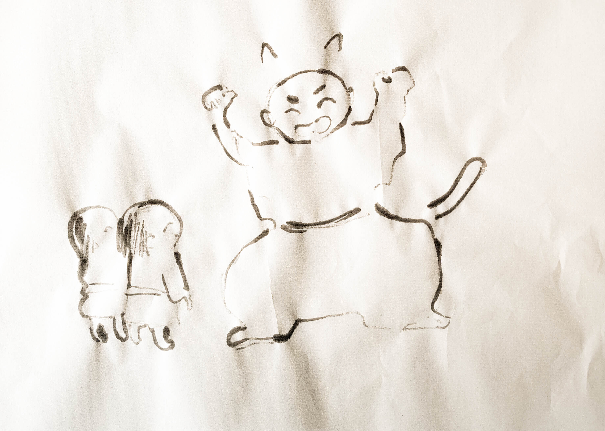
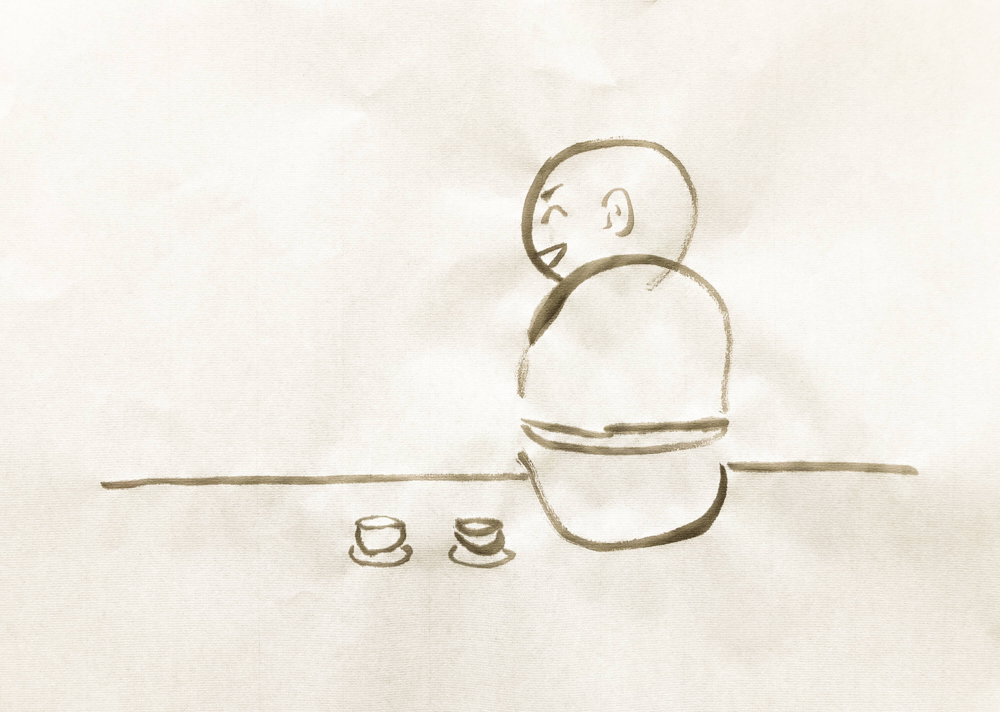

菅原道真公 #1
九州の北のほうに、竈門山（かまどやま）というお山があります。
そこでは、玉依姫（たまよりひめ）様という神様がたくさんの眷属と暮らしています。
龍女（りゅうじょ）もその一柱です。
龍女は玉依姫様の言葉を人間に伝えるお仕事をしています。
以前は龍女の双子の兄がその役目を担っていましたが、ある日の朝、龍女が目を覚ますと兄は姿を消していました。そのため、龍女が兄のかわりに働いているのです。
双子は、この島国から遠く離れた砂漠で生まれました。
はじめは小さな小さな虫でした。
それから鳥や魚に獣、ときどき人間にもなりました。
双子はたいてい一緒でしたが、生まれる時、必ずしも双子ではありませんでした。
親子、友人、恋人・・・様々な出会い方をしました。
たまに、まったく別の時間を過ごして出会わないこともありました。
双子は幾千もの時を旅しました。
そしてこの島国の海で、双子は龍として生まれました。西暦600年も後半に差し掛かった頃の話です。
龍となった双子は、様々な時代を行き来することができました。
その能力を買われて、双子は竈門山で暮らすことになりました。
特に兄はとても優秀で、すぐに周囲から一目置かれる存在となりました。龍女はいつも兄と比べられていました。兄がいなくなってからは、前にも増して他の眷属達から冷たく当たられることが増えました。龍女は聞こえないふりをして一生懸命働きました。
西暦900年が始まった頃、龍女は、太宰府で暮らす、ある男の元へ降り立ちました。
男は今にも崩れそうな屋敷で、粗末な着物を着て、日がな一日読経をして暮らしていました。
男は、元は学者であり、政治家でもあり、京都で国づくりに勤しむ日々を送っていました。その功績が認められ右大臣にまで上り詰めましたが、ある日突然、任を解かれ、半年ほど前に弟子1人子2人を連れてこの地にやって来たばかりです。
男は縁側で1人、質素な庭を眺めていました。
龍女は男性の役人の姿に変身して、男の前に現れました。
「突然の訪問をお許しください。貴方様にお伝えすべきことがあります。」
いきなり声をかけられた男は驚き、しばらくぼんやりとその姿を眺めていましたが、急に目が覚めたような顔をして役人の前に跪きました。役人が龍女であることに気が付いたのです。
２人はしばらく黙っていましたが、次第に男が怒りで体を震わせ始めました。
「失礼を承知で申し上げます。今更、何をわたくしにお伝えくださろうというのでしょうか。何故もっとはやく来てくださらなかったのですか。間に合いませんでした。もう何もかも遅いのです。」
龍女は黙って男の声に耳を傾けていました。
「何故、今なのですか。私は自分の仕事に誠心誠意取り組んできました。この国に文字通り身を捧げてまいりました。それなのにこの仕打ち。私はまったく納得できません。」
男は泣き始めました。
「しかしあの子たちは関係ありません。あの子たちはここで大変苦しい生活を強いられています。何故、神も仏も、助けて欲しいときに何も仰ってはくださらないのか。いつもそうだ。何もしてくださらない。何も。」
しばらくして、龍女は口を開きました。
「玉依姫様から、励めよ、とのことです」
男はそれを聞いてさらに激しく泣き、手当たり次第に石や草を掴んではその場に打ちつけました。
龍女は静かにその様子を見守りました。
男の名は、菅原道真といいました。
つづく
老松 #1
つづく
飛梅の前世 #1
「ぷは〜！」
梅子は抹茶碗を口から離して気持ち良さそうに叫んだ。
「好きだね、お抹茶。」
龍女は笑いながら自分の抹茶碗を口に運ぶ。これから二人は竈門山に登る予定で、時刻は朝の４時半。国立博物館跡地の近くにあるカフェで登山前の腹ごしらえをしているところである。
「この龍っていう字、ほんといつ見ても良き、ね！」
梅子は壁にかけられた書を気持ち良さそうに眺めた。120年ほど前に書かれたその字は今も活き活きと泳いでいる。龍女も書に顔を向け、相変わらず面白い字を書く人だ、と心の中で微笑む。
梅子は高校まで太宰府で暮らした後、東南アジアの大学に進学し経済学の博士号を取得。そのまま現地に滞在し、人体拡張系のスタートアップに就職した。それから数年ほど音沙汰がなかったが、「戦後処理が続いている太宰府で支援活動をおこなうことにした」「ちょっと時間ができたから、お山に行こう」と龍女の端末にメッセージを送ってきたのが１週間ほど前であった。時は西暦2130年頃。龍女は梅子と同い年の女性の姿に変身している。
「今日は付き合ってくれてほんとにありがとうね。」
梅子はへらへらと笑いながら、相変わらず龍の書を眺めている。
「やっぱりさ、この辺って相変わらず何が起こるかわかんないし、できる限り大切な人の顔は見ておきたいじゃん？行けるときに山、行っときたいじゃん？」
50年前、大きな戦争がこの辺りであった。地形は変わり、人を含む生き物と、彼らを守ろうとした神と仏、眷属がたくさん死んだ。竈門山の眷属も半分が犠牲になった。今もまだ、玉依姫様の力は完全には戻っていない。この地域一帯は危うい状況が続いている。
「そう言えば！」
梅子はパッと明るく笑って龍女の方に顔を向けた。
「すんごい面白い本を昨日、博物館跡地の倉庫で見つけたんよ！『宝満山歴史散歩（*）』っていう130年くらい前の本！一冊しかなくて今にも崩れそうだったから、ココに入れてきた。」
梅子は自身の右目を指さした。拡張してストレージ機能を持たせた右目がキラキラと虹色に光ったかと思うと、龍女の端末が震えた。「ありがとう」と言いながら龍女が端末を覗き込むと、読み込みが完了した一冊の本のデータが自動で展開された。龍女は本の表紙を見て、懐かしさからフフッと笑った。
「あれ、知ってた？この本。」
「うん、まあね。ところで目、めちゃくちゃ派手だね・・・。」
「そりゃそうよ！人生なんてね、パーッといかなきゃソンソンよ！ぱぁ〜！」
梅子は大袈裟に右目を光らせてみせた。
「あ、で、まあ、何が言いたかったかって言うと、今日の登山はこの本を読みながら登るのはどうかな〜と思ってね。なんかガイドブックみたいになっててねこれ。でもガイドブックとは違うと言うか〜。」
「良いと思う。でも本の内容と比べると、かなり地形が変わっちゃってるけど・・・」
「それそれ、それがポイントなの。何が残って何が失われたのか、まだ体系立ててデータ管理されてないみたいでね。もう50年も経ってるのに。まあ、戦争で人が減り過ぎちゃったからしょうがな」
そこまで話すと梅子は何かを思い出したかのように「あ」と声を漏らし、無表情になり、手元の空になった抹茶碗の底をじっと覗いたかと思うと、先ほどまでと別人のような顔をして龍女を見つめ、口を開いた。
「だから私がする。この本が鍵。これからのために。」
梅子”のようなもの”を龍女はじっと見つめ、またか・・・とため息をついた。梅子はいつもこうだ。いとも容易く誰かに自分の器を貸してしまう。これもある意味人助け！とはしゃぐ梅子の姿が目に浮かぶ。
さて、こいつをどうしてやろうか。食い千切るのは簡単だ。でも、今はそのままにしておく。今日の登山は二人のつもりだったのだが、まさかくっついてくる気か。少しうんざりするが、梅子がそうしたいのなら仕方がない。龍女はちらりと端末の時計を見て言った。
「そろそろ行こうか。」
梅子は静かに微笑むと、音もなく立ち上がった。
つづく
* 森弘子『宝満山歴史散歩』、葦書房、2000年
野狐 #1
僕の話をどこから始めたらいいのか、正直なところよく分からないでいる。しかし、何でもいいからとにかく始めなければならない。僕は、僕という存在について語ることを僕に赦すことに決めたのだ。いや、仕方なく、そうするしかなかったと言うほうが合っているかもしれない。もう懲りたのだ。僕は僕に、懲りたのだ。
僕は野狐だ。人間の欲を貪る化け物だ。どうして僕が僕になったのかは知らない。気が付いたら僕は僕だった。僕以前の僕があったのかどうかも分からない。ただ分かるのは、僕が最低最悪のクズだってことだけだ。僕はクズだ。生まれてこなければよかった。そもそも僕は生きていると言えるのか？生きているとはどういう状態を指すのか？僕は確かに存在して「いるように見える」が、本当に僕はこの世界に居るのか？本当は僕は長い夢を見ているだけで、目が覚めれば別の何かなんじゃないか？クソが。クズな上にこんなクソみたいなことしか考えられない、それが僕だ。笑える。でも笑いたくない。
他の野狐はどうだか知らないが、僕は人間の負の感情を食べることで生きている。負の感情だったら何でもいいが、重ければ重いほど腹がふくれる。最悪だ。僕は負の感情が大嫌いなのに、それがないと生きていけない。重ければ重いほど美味いと感じるのも本当に最悪だ。本当に、なんで僕はこんなふうなんだ。もっと別の生を享受したかった。もっとこう、普通の狐とか、ああいうのがよかった。普通がよかった。なんで僕はこうなんだ。なんで。クソ、クソ、クソクソクソ。
一度、食べるのをやめてみたことがある。まあなんというか、ただ死にかけただけだった。偶然出会った他の野狐が助けてくれなかったら死んでた。でも感謝はしない。別にあれは僕のことなんかどうでも良くて、ちょうど取り憑いていた人間をもっと落とすために僕を利用しただけだった。あれは野狐の鑑みたいなやつだ。あの時、もし僕があと少しだけ弱っていたら、あれは人間と一緒に僕も食うつもりだったに違いない。絶対に関わっちゃいけないやつだ。物心がついてから色々とヤバいやつを見てきたが、あれはなかなかだ。あの時の僕、あんなのからよく逃げ出せたな。人間はあれと対峙できるのか？まあ、ほとんどは無理だろうな。ほら、こうやって僕はすぐ人間のことばかり考える。何故だ？人間は僕にとって食材（負の感情）を提供してくれる畑みたいなもんでしかないのだが。そのはずなのだが。なんか疲れたな。
そういえば龍女が京都から来たおっさんを泣かせていた。あいつは本当に言い方をもっと考えたほうがいい。本当にあれで伝わると思ってるのか？あれでも神の使いなんだろ？下手すぎないか？僕のほうがもっとうまくやれる自信がある。というか野狐は人心掌握が得意だ。そうしないと飯にありつけないというのもあるが。僕だったらあの手この手であのおっさんの弱みにつけこんで、周りの人間も巻き込んで、ぐちゃぐちゃに掻き回して、孤独にさせて、ありえたかもしれない未来を全部放棄させてやる。いや、本当は嫌いなんだ、こういうこと。信じてくれ。でも、僕の欲望が僕の理性を超える瞬間がある。僕は文字通りただの化け物になる。もうやめてくれ！死にたいけど、死にたくない。死にたがりの、生きたがり。もう消して欲しい。僕を、はじめからそんなものはいなかったのだと、僕という存在を、この世から、誰か。
つづく
野狐 #2
じゃりっ
僕は軽快な足取りで砂浜を踏みしめた。ここは天も地も全てが白い。いや実際にはどんなものでも近付いてよく見るとちゃんと色がある。でも少し離れると途端に対象そのものがぼやけてしまい、まるで自分の目に白いモヤがかかったみたいなおかしな見え方をしだす。これは僕の目だけなのか、それとも誰にだって起こるのか。あいつに聞けば一発で解決するんだろうけど、別にそんなこと聞いたところで何がどうなるわけでもないから正直どうでもいい。いや違う、嘘だ、また僕は僕に嘘をついた。僕はすぐ自分に嘘をついてしまう。自分の核に触れようとする気配に僕はとてつもなく敏感で、気付いた瞬間に全てを嘘で誤魔化そうとしてしまう。僕は怖いのだ。怯えているだけなのだ。僕が嘘をついていることがバレるのは大変な恥だと思っているし、嘘で隠していた自分が晒されるのも最悪だ。それに、何かを聞いたところで「何がどうなるわけでもない」ことを認めざるを得なくなったら本当に死にたくなる。まるでそれじゃあどうにかなりたがっているように聞こえるかもしれないが、何がどうなるわけでもないまま終わるよりもそのほうが幾分マシだ。何かしたところで何もならないという事実は簡単に僕の心を打ち砕く。
じゃりっ
僕たちはいつもそれぞれの都合でこの空間にやってくる。タイミングが合う日もあれば合わない日もある。砂浜にポツンと立っている老松の根本がいつの頃からか僕たちの集合場所になり、うまく出会えた日はそこで談笑する。・・・談笑？そんな可愛らしいもんじゃない。たいてい僕ばっかりおしゃべりで、あいつは黙って聞いていることがほとんどなのだから。そんな僕たちのことを老松もまた黙って見下ろしている。老松はいい奴だ。なんでこんなところに居るのか知らないが、ただじっとそこにいる。京都から来たおっさん―あいつが泣かせていた奴だ―とも知り合いみたいだが、それはあいつから聞いた情報で、本人は何も話さない。ただそこにいるだけだ。正直羨ましい。妬ましくはない。これは本当に嘘じゃない。単純に、いいなと思える。老松の根本にいると自分の核が暖かくなる感じがする。この感覚を前から知っているような気がするけれど思い出せない。僕がどこから来たのか思い出せないのと同じように。
じゃりっ
あいつは老松の根本にだらしなく寝転んで、何やら筒のようなものを咥えては離し、煙を吐き出してはまた咥えというおかしな動作をゆっくりと繰り返していた。たぶんまたどっかの時代から持ってきたんだろう。あいつは山の神さんの目が届く範囲ならどこへでも行けるから、各地の各時代で見つけたあれやこれやをここに持ち込んでは遊んでいる。なんでそんなに人間の作ったものに関心があるのかさっぱり分からない。いや、嘘だ。僕だって人間のことが気になりすぎて仕方がない。でも怖いから、興味なんてないフリをしてやり過ごしているだけだ。怖い？何が？分からない。僕は怖がっているのか？・・・本当に？それは本来もっと別の感情だったのではないか？それを誰かに言われるがまま「怖い」という言葉に置き換えただけじゃないのか？・・・誰かって誰だ？分からない。どうでもいい。いや、どうでもよくない。でも、どうにもできないなら、どうでもいいとしたほうがマシだ。
「遅かったな」
この空間の主である龍女はフーッと煙を吐き出して、ちらりとこちらを見た。その瞬間、僕の核が激しく揺れた。落ち着け、この震えを悟られないように・・・といってもどうせバレているんだが。とりあえず平静を保っているフリをしてこいつの隣にドカッと座った。煙と一緒に甘ったるい匂いが僕の顔にまとわりつく。老松は黙って僕たちを見下ろしている。
「何だよそれ」
「秘密」
龍女はフッと笑うと、筒を持っている手を軽くひと振りした。直後、筒も煙もスッと消えた。僕がこんなにも揺れ動いているのに、それを知っているはずなのに、どうしてこいつはこんなにも「いつも通り」でいられるんだろう。でもだからどうだって言うんだ。どうせ僕が何をどうしようとも、こいつは何も変わらないんだから。それなら何もせず、何も変わらないままでいい。僕とこいつがただなんとなく、老松の根本でごろごろしているだけでいいじゃないか。・・・本当に？いや、やめろ、やめてくれ、もうこれ以上はいい。もういいから。もういいんだ。
「道真」
龍女は静かにつぶやいた。
「そばに居てやってくれないか」
龍女は上半身を起こし、老松にもたれかかって座っている僕を少し見下ろすようにして言った。
「いや、誰それ・・・」
「京都から来た」
「あー！あのおっさん？え？ヤダよなんで俺！？お前さあ、俺いちおうこれでも野狐なんですけど」
「構わない」
「はあ〜〜〜〜〜？？？？？・・・あのおっさん食い潰してもいいの？」
「お前はそんなことしないだろう」
龍女はジッと僕の目を見た。龍の目に見つめられると、すべてを見透かされているような気分になって、怖くてうまく動けなくなる。いや実際に、本当に、見透かしているんだろうけど。
「・・・じゃあ、さっきの筒みたいなのちょーだい」
僕は恐怖で体が震えそうになるのを一生懸命我慢しながら、「俺」らしくふざけた態度を取った。どうせこれも演技だってバレてるんだろうけど。
「・・・あれは駄目だ、もう無い」
・・・嘘だ。絶対あるに決まってる。僕は笑った。龍女は困ったなという顔でこちらを見ている。ああ、おかしい。なんでこいつはこんなに真っ直ぐなのだろう。なんで僕はこんなに真っ黒なのだろう。どうして僕は僕なのだろう。僕は僕でなければよかった。ただそれだけでよかった。それなのにそうではなかった。僕は僕でしかなかった。今この瞬間も、僕は僕だ。
「出来ねえくせに嘘付いてんじゃねえよ」
僕は乱暴にそう言うと、龍女に背を向けるようにして寝転んだ。分かっている、このあと僕がなんて答えるかさえも、こいつはどうせ全部お見通しなんだろう。僕は所詮、こいつの掌の上で転げ回っているだけに過ぎないただの駒だ。僕が出来るのは、いつか「ついうっかり」足を踏み外して消えて無くなることぐらいだろう。怖いからそんなことするつもりはないけれど。今のところは。
「さっきの話、やってあげてもいいよ」
僕は僕の暗闇の深さを確かめるように、そっと静かに目を閉じた。
つづく
飛梅 #1
揺らぐ玉見下ろしたるはデラシネの
主待ち仰ぐ玉箒哉
ゆらぐたま みおろしたるは でらしねの
しゅ まちあおぐ たまばはきかな
つづく
味酒安行 #1

人が虎になる物語を、全身を使って子ども達にお話される先生の図
つづく
味酒安行 #2

白湯をいただきながら龍女殿と談笑される先生の図
つづく
龍女の双子の兄 #1
私はこの先のとある道端で
白く光っていてみせよう
はじめに君が
視界の端で何かが光るのに気付くのは
明日かもしれないし
君が死ぬ間際かもしれないし
何度か生まれ変わった後かもしれない
光に気付いた後の君は
光を妄信するかもしれないし
暗いところを好むかもしれないし
空を見て帰りたいと涙するかもしれない
光を知った後の君は
蝶の羽ばたきに耳を澄ますかもしれないし
木々と１つになるかもしれないし
宇宙を漂う旅へ出るかもしれない
そうしていつしか
君は自ら光り始める（果たして何色に光るのか）
私は君と出逢うその日まで
ただただここで
白く光っていてみせよう
つづく
龍女の双子の兄 #2
迷うな惑うな己の道を
全てを知るは己のみ
迷うな惑うな己の道を
誰かに渡すは嘘の道
迷うな惑うな己の道を
見失ったその時は
よく聞けよく聞け道の向こうに
耳を澄ませよ鷽の声
迷うな惑うな己の道を
答えは己の中にある
つづく